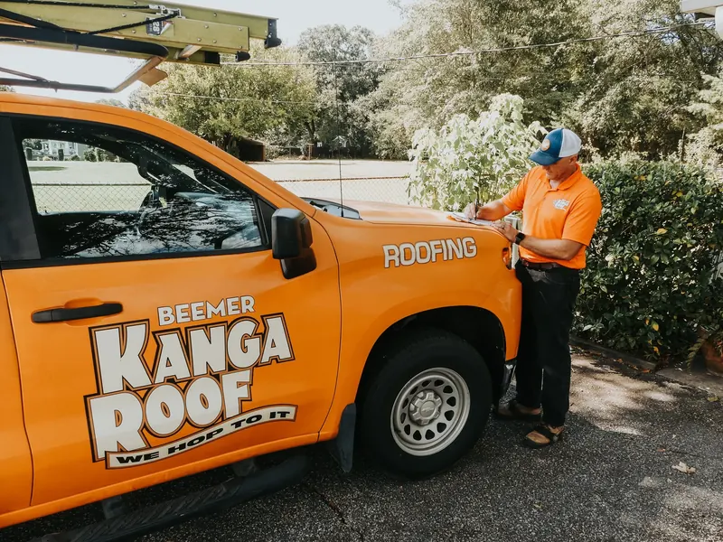

Greenville roofing questions, answered
Costs, timing, insurance, financing and what we mean by free.
Call for a free inspection(864) 412-2573
How much does roof repair cost in Greenville, SC?
Roof repair costs in Greenville typically range from $250 to $1,500, depending on the cause, roof type, pitch, and how quickly the issue is caught. Minor shingle repairs are usually on the lower end, while storm damage or leak tracing may cost more. We provide free inspections and photo documentation so you can see exactly what needs to be fixed.
Do you offer same-day emergency roof repair in Greenville?
We offer weekday same-day emergency service, but not full same-day repairs. Here is exactly what we provide:
- Same-day emergency response Monday to Friday (emergency fee applies)
- A temporary repair to stop leaks and prevent further damage
- A scheduled full, permanent repair once the roof is safely inspected
We do not offer same-day emergency service on weekends. After hours or on weekends, we can schedule the next available appointment for the following business day.
How long does a roof replacement take in Greenville?
Most Greenville roof replacements are completed in 1 day. Larger homes, complex rooflines, or specialty materials like metal or tile may take 2 to 3 days. Our team provides a detailed schedule and handles tear-off, installation, cleanup, and disposal.
Do you help with storm damage insurance claims?
Absolutely. We regularly assist homeowners with insurance claim support, including:
- Documenting roof damage with photos
- Providing repair or replacement estimates
- Meeting with your insurance adjuster
- Explaining coverage, exclusions, and next steps
What are the benefits of a roof maintenance program in Greenville, SC?
A roof maintenance program helps extend the life of your roof, reduce repair costs, and catch small issues before they turn into major damage. In Greenville’s climate, routine inspections can prevent leaks caused by storms, heat, and humidity. Our program includes scheduled inspections, priority service, and documented roof condition reports.
What roofing materials do you install?
We install and repair a full range of residential and commercial roofing materials, including asphalt shingles, architectural shingles, metal roofing, TPO, EPDM, and skylights and flashing components. If you are unsure which system is right, we’ll walk you through the pros and cons for Greenville’s climate.
How do I know if my roof needs repair or replacement?
Common signs your roof needs professional attention include:
- Missing, curled, or damaged shingles
- Active leaks or ceiling stains
- Sagging roof decking
- Flashing rust, cracks, or gaps
- Dark streaks or algae growth
- Storm or wind damage
We provide a free, photo-documented inspection to determine whether repair or replacement is the best solution.
Do you offer financing for roof repair or replacement?
Yes. We offer flexible roofing financing options for Greenville homeowners and commercial clients. Ask about available monthly payment plans during your inspection, or see our financing page.
What areas of Upstate South Carolina do you serve?
We proudly serve Greenville, Simpsonville, Mauldin, Greer, Taylors, Anderson, Spartanburg, Easley, Travelers Rest, Duncan, Fountain Inn, Lyman and surrounding Upstate SC communities. If you’re within driving distance of Greenville, we can help.
Are your roof inspections really free?
Yes, every inspection is 100% free. No obligation. No pressure. Just clarity about your roof’s condition.
Are you licensed and insured?
Yes. Beemer KangaRoof® is fully licensed, bonded, and insured to operate in South Carolina.
